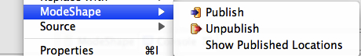

The ModeShape Context Menu consists of these actions: publish, unpublish, and show published locations. The publish and unpublish actions will be enabled when one or more resources (i.e, project, folder, or file) in the workspace are selected. When publishing, the selected resources will be uploaded to a ModeShape repository workspace. When unpublishing, the selected resources will be removed from a selected ModeShape repository workspace (if they exist there). If a resource has already been published using the current Eclipse workspace, the show published locations action will be enabled.
Here is what the ModeShape Context Menu looks like:
Files can be filtered out of publishing operations even though they have been selected. Use the Ignored Resources Preference Page to control which files are filtered out. If a file name, or the name of the folder they are contained in, or the name of an ancestor folder, match one of the patterns identified on this preference page, they will not be included in publishing operations.